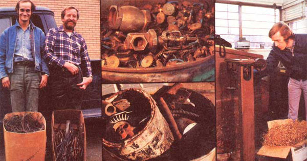

Two happy guys about to swap some scrap metal for a few welcome extra bucks. Bronze, or red metal, above a photo of scrap steel. And, although larger amounts of scrap metal are weighed into a dealer's yard by truck or trailer load, smaller quantities?such as this box of yellow brass shavings?usually get weighed on a roll-around platform scale